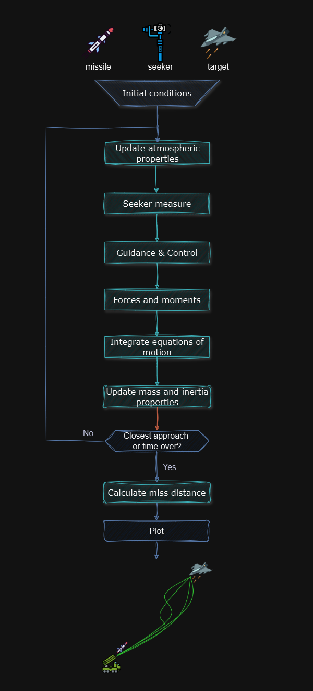
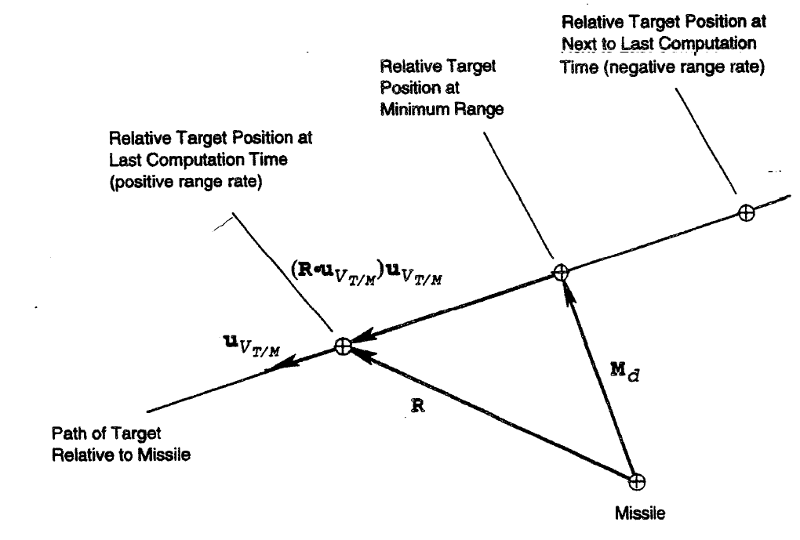

To download this notebook, click the download icon in the toolbar above and select the .ipynb format.
For any questions or comments, please open an issue on the c4dynamics issues page.
6 Degrees Of Freedom Missile Guidance Simulation#
This notebook demonstrates how to use c4dynamics to implelment a six degrees of freedom simulation. The details of the missile models and the guidance system can be found in the example at chapter \(12\) of the Military Handbook of Missile Flight Simulation.
C4dynamics is a powerful framework for algorithm development. Its advanced toolset enables realistic modeling and dynamic analysis, making it ideal for applications in robotics, aerospace, and mechanical engineering.

The program utilizes the following components of c4dynamics:
Object |
Module |
Description |
|---|---|---|
missile |
The missile is modeled as a rigid body, representing a mass in space with defined length and orientation |
|
target |
The target is represented as a datapoint object, modeling a point mass in space |
|
seeker |
Line of sight seeker |
|
g_ms2 |
Gravity constant in meters per second |
|
r2d |
Radians to degrees conversion constant |
|
plotdefaults |
Setting default properties on a matplotlib axis |
In addition, some operations use c4dynamics modules explicitly. Among them:
missile.RB uses the rotmat module to rotate a vector from the body frame (B) to a reference frame (R).
missile.inteqm() intgrates the equations of motion for a given vector of forces.
Let’s start.
Setup#
Import packages#
[6]:
import c4dynamics as c4d
import numpy as np
[7]:
from dof6_modules import control_system, engine, aerodynamics
Times setup#
[8]:
t = 0
tf = 100
dt = 5e-3
Target#
datapoint object which means it has all the attributes of a mass in space:Position: target.x, target.y, target.z.Velocity: target.vx, target.vy, target.vz.It also has mass: target.mass (necessary for solving the equations of motion in the case of accelerating motion)
In this example, the target is initialized with specific positions along the three axes and a velocity component only along the x-axis.
[9]:
target = c4d.datapoint(x = 4000, y = 1000, z = -3000, vx = -250)
Missile#
rigidbody object, i.e. it has all the attributes of a datapoint, but also includes:Body (Euler) angles: missile.phi, missile.theta, missile.psi.Angular rates: missile.p, missile.q, missile.r (rotation about \(x\), \(y\), and \(z\), respectively).Since the rocket engine operates through fuel combustion, the missile’s mass properties vary over time.
To enable mass recalculations during runtime, it is advisable to store the missile’s initial conditions.
As \(i_{yy}\) and \(i_{zz}\) are equal here it’s enough to save just one of them. However, the initial position and initial attitude of any object (datapoint, rigidbody) are always saved on instantiation.
The dimensions here are SI (i.e. seconds, meters, kilograms).
[10]:
m0 = 85 # initial mass, kg
mbo = 57 # burnout mass, kg
iyy0 = 61 # initial momoent of inertia about y and z
ibo = 47 # iyy izz at burnout
xcm0 = 1.55 # initial distance from nose to center of mass, m
xcmbo = 1.35 # distance from nose to center of mass after burnout, m
[11]:
missile = c4d.rigidbody()
[12]:
missile.mass = m0
missile.I = [0, iyy0, iyy0]
missile.xcm = xcm0
Modules#
[13]:
seeker = c4d.sensors.lineofsight(dt, tau1 = 0.01, tau2 = 0.01)
ctrl = control_system(dt)
eng = engine()
aero = aerodynamics()
Initial conditions#
The initial missile direction is calculated by employing a simple algorithm in which the missile is pointed \(30°\) below the line of sight to the target at the instant of launch. The missile angular rates at launch are assumed to be negligible.
[14]:
rTM = target.position - missile.position
rTMnorm = np.linalg.norm(rTM)
ucl = rTM / rTMnorm # center line unit vector
pitch_tgt = np.arctan(ucl[2] / np.linalg.norm(ucl[:2])) * c4d.r2d
heading = 30 # +30 tilts head down since z positive is downward.
pitch_lnch = pitch_tgt + heading
ucl[2] = np.linalg.norm(ucl[:2]) * np.tan(pitch_lnch * c4d.d2r)
ucl = ucl / np.linalg.norm(ucl)
missile.vx, missile.vy, missile.vz = 30 * ucl # 30m/s is the missile initial velocity
missile.psi = np.arctan(ucl[1] / ucl[0])
missile.theta = np.arctan(-ucl[2] / np.sqrt(ucl[0]**2 + ucl[1]**2))
missile.phi = 0
u, v, w = missile.BR @ missile.velocity
vc = np.zeros(3)
ab_cmd = np.zeros(3)
h = -missile.z # missile altitude above sea level
alpha = 0
beta = 0
alpha_total = 0
d_pitch = 0
d_yaw = 0
delta_data = []
omegaf_data = []
acc_data = []
aoa_data = []
moments_data = []
Frame of coordinates and DCM#
The property missile.BR returns a Body from Inertial DCM (Direction Cosine Matrix) in 3-2-1 order. Using this matrix, the missile velocity vector in the inertial frame of coordinates is rotated to represent the velocity in the body frame of coordinates.
The inertial frame is determined by the frame that the initial Euler angles refer to. In this example, the reference of the Euler angles are as follows:
\(\varphi\): rotation about \(x\)
\(\theta\): rotation about \(y\)
\(\psi\): rotation about \(z\)
The frame axes convention is given by:
\(x\): parallel to flat earth in the direction of the missile centerline
\(y\): completes a right-hand system
\(z\): positive downward
Main loop#
The main simulation loop performs the following steps:
Estimate the line-of-sight angular rate between the missile and target.
Generate wing deflection commands for the missile.
Calculate forces and moments acting on the missile.
Integrate the missile’s equations of motion.
Integrate the target’s equations of motion.
Update the simulation state.
The simulation runs until one of the following conditions:
The range rate changes sign
The missile hits the ground
The simulation time is over
Comments are introduced inline.
[15]:
while t <= tf and h >= 0 and vc[0] >= 0:
# relative position
vTM = target.velocity - missile.velocity # missile-target relative velocity
rTM = target.position - missile.position # relative position
# relative velcoity
rTMnorm = np.linalg.norm(rTM) # for next round
uR = rTM / rTMnorm # unit range vector
vc = -uR * vTM # closing velocity
# calculate the line of sight rates
wf = seeker.measure(rTM, vTM)
omegaf_data.append([wf[1], wf[2]])
# atmospheric calculations
pressure, rho, vs = aerodynamics.alt2atmo(h)
mach = missile.V() / vs # mach number
Q = 1 / 2 * rho * missile.V()**2 # dynamic pressure
# guidance and control
if t >= 0.5:
'''
The guidance is initiated half a second after launch in
order to permit the missile to gain enough speed so that
it can be controlled.
Then the line of sight rate vector and the missile velocity
are used to base maneuver commands and the control system
responds by deflecting the control surfaces.
'''
Gs = 4 * missile.V()
acmd = Gs * np.cross(wf, ucl)
ab_cmd = missile.BR @ acmd
afp, afy = ctrl.update(ab_cmd, Q)
d_pitch = afp - alpha
d_yaw = afy - beta
acc_data.append(ab_cmd)
delta_data.append([d_pitch, d_yaw])
''' forces and moments '''
# aerodynamic forces
cL, cD = aero.f_coef(mach, alpha_total)
L = Q * aero.s * cL
D = Q * aero.s * cD
A = D * np.cos(alpha_total) - L * np.sin(alpha_total) # aero axial force
N = D * np.sin(alpha_total) + L * np.cos(alpha_total) # aero normal force
fAb = np.array([ -A
, N * (-v / np.sqrt(v**2 + w**2))
, N * (-w / np.sqrt(v**2 + w**2))])
fAe = missile.RB @ fAb
# aerodynamic moments
cM, cN = aero.m_coef(mach, alpha, beta, d_pitch, d_yaw
, missile.xcm, Q, missile.V(), fAb[1], fAb[2]
, missile.q, missile.r)
mA = np.array([0 # aerodynamic moemnt in roll
, Q * cM * aero.s * aero.d # aerodynamic moment in pitch
, Q * cN * aero.s * aero.d]) # aerodynamic moment in yaw
moments_data.append(mA)
# propulsion
thrust, thref = eng.update(t, pressure)
fPb = np.array([thrust, 0, 0])
fPe = missile.RB @ fPb
# gravity
fGe = np.array([0, 0, missile.mass * c4d.g_ms2])
# total forces
forces = np.array([fAe[0] + fPe[0] + fGe[0]
, fAe[1] + fPe[1] + fGe[1]
, fAe[2] + fPe[2] + fGe[2]])
'''
So far the three types of foces and moments, i.e. aerodynamic, propulsion,
and gravitation, have been calculated.
The missile.inteqm() function and the target.inteqm() function perform
integration on the derivatives of the equations of motion.
The integration is performed by running Runge-Kutta of fourth order.
For a datapoint, the equations are composed of translational equations,
while for a rigidbody they also include the rotational equations.
Therefore, for a datapoint object like the target,
a force vector is necessary for the evaluation of the derivatives.
The force must be given in the inertial frame of reference.
As the target in this example is not maneuvering, the force vector is [0, 0, 0].
For the missile, as a rigidbody,
both a force vector and a moment vector are required to evaluate the derivatives.
The force vector must be given in the inertial frame of reference.
Therefore, the propulsion, and the aerodynamic forces are rotated
to the inertial frame using the missile.RB rotation matrix.
The gravity forces are already given in the inertial frame and therefore remain intact.
'''
# missile motion integration
missile.inteqm(forces, mA, dt)
# rotate the velocities vector from the reference inertial frame
# to the missile body frame.
u, v, w = missile.BR @ np.array([missile.vx, missile.vy, missile.vz])
# target dynmaics
target.inteqm(np.array([0, 0, 0]), dt)
# update
t += dt
missile.store(t)
target.store(t)
''' update mass and inertial properties '''
missile.mass -= thref * dt / eng.Isp
missile.xcm = xcm0 - (xcm0 - xcmbo) * (m0 - missile.mass) / (m0 - mbo)
izz = iyy = iyy0 - (iyy0 - ibo) * (m0 - missile.mass) / (m0 - mbo)
missile.I = [0, iyy, izz]
alpha = np.arctan2(w, u)
beta = np.arctan2(-v, u)
uvm = missile.velocity / missile.V()
ucl = np.array([np.cos(missile.theta) * np.cos(missile.psi)
, np.cos(missile.theta) * np.sin(missile.psi)
, np.sin(-missile.theta)])
alpha_total = np.arccos(uvm @ ucl)
aoa_data.append([alpha, beta, alpha_total])
h = -missile.z
Miss distance#
Closest range: The miss distance vector is approximated as the component of \(rTM\) that is perpendicular to the relative flight path at the last computation time. (\(dot(rTM, uvTM) \cdot uvTM\) is the component of \(rTM\) along \(uvTM\), i.e. the component of the position along the velocity)
Time at closest range The time of the closest approach is approximated by calculating the time it takes the target to travel along the relative flight path from the point of closest approach to the final target position and then subtracting this calculated time from the time of the last computation.
[16]:
vTM = target.velocity - missile.velocity # missile-target relative velocity
uvTM = vTM / np.linalg.norm(vTM)
rTM = target.position - missile.position # relative position
md = np.linalg.norm(rTM - np.dot(rTM, uvTM) * uvTM)
tfinal = t - np.dot(rTM, uvTM) / np.linalg.norm(vTM)
print('miss: %.5f, flight time: %.1f' % (md, tfinal))
miss: 0.00339, flight time: 7.8

Plot results#
Configure pyplot#
[17]:
from matplotlib import pyplot as plt
plt.style.use('dark_background')
fcsize = 4
fontsize = 5
linewidth = 1
asp = 1080 / 1920
plt.rcParams['figure.dpi'] = 300
plt.rcParams["font.family"] = 'Times New Roman'
plt.rcParams['figure.figsize'] = (fcsize, fcsize * asp)
plt.rcParams['figure.subplot.top'] = 0.9
plt.rcParams['figure.subplot.left'] = 0.15
plt.rcParams['figure.subplot.right'] = 0.9
plt.rcParams['figure.subplot.bottom'] = 0.2
plt.rcParams['figure.subplot.hspace'] = 0.8
Trajectories#
[18]:
plt.switch_backend('inline')
fig, (ax1, ax2) = plt.subplots(2, 1)
ax1.plot(missile.data('x', 1 / 1000)[1], missile.data('y', 1 / 1000)[1], 'b', linewidth = linewidth, label = 'missile')
ax1.plot(target.data('x', 1 / 1000)[1], target.data('y', 1 / 1000)[1], 'm', linewidth = linewidth, label = 'target')
c4d.plotdefaults(ax1, 'Top View', '', 'Crossrange (km)', fontsize = fontsize)
ax2.plot(missile.data('x', 1 / 1000)[1], -missile.data('z', 1 / 1000)[1], 'b', linewidth = linewidth, label = 'missile')
ax2.plot(target.data('x', 1 / 1000)[1], -target.data('z', 1 / 1000)[1], 'm', linewidth = linewidth, label = 'target')
c4d.plotdefaults(ax2, 'Side View', 'Downrange (km)', 'Altitude (km)', fontsize = fontsize)
plt.legend(fontsize = 4, facecolor = None, loc = 'lower right');
Euler angles#
[19]:
_, ax = plt.subplots()
ax.plot(*missile.data('phi', c4d.r2d), 'b', linewidth = linewidth, label = '$\\varphi$')
ax.plot(*missile.data('theta', c4d.r2d), 'm', linewidth = linewidth, label = '$\\theta$')
ax.plot(*missile.data('psi', c4d.r2d), 'y', linewidth = linewidth, label = '$\\psi$')
c4d.plotdefaults(ax, 'Euler Angles', 'Time[s]', '[deg]', fontsize = fontsize)
plt.legend(fontsize = 4, facecolor = None, loc = 'lower right');
Line of sight rates#
[20]:
# omega los
fig, (ax1, ax2) = plt.subplots(2, 1)
ax1.plot(missile.data('t'), np.array(omegaf_data)[:, 0] * c4d.r2d, 'm', linewidth = linewidth)
ax2.plot(missile.data('t'), np.array(omegaf_data)[:, 1] * c4d.r2d, 'm', linewidth = linewidth)
ax1.set_ylim(0, 3.5)
ax2.set_ylim(-0.25, 0.6)
c4d.plotdefaults(ax1, '$\\omega_{pitch}$', fontsize = fontsize)
c4d.plotdefaults(ax2, '$\\omega_{yaw}$', 'Time (s)', fontsize = fontsize)